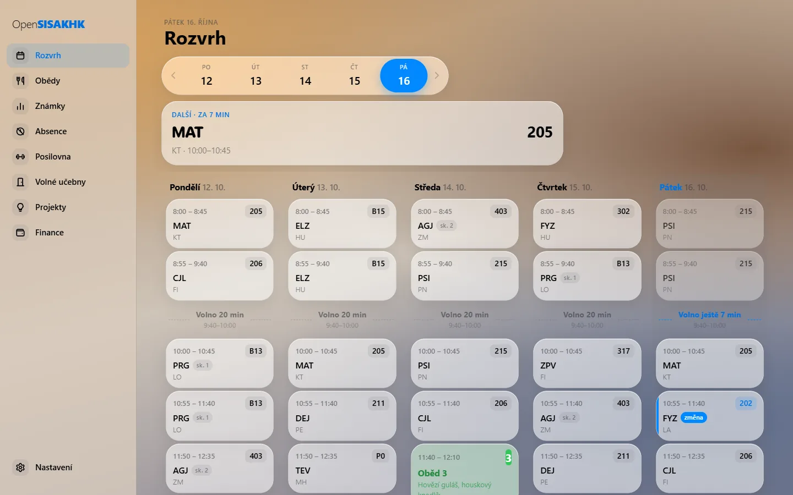
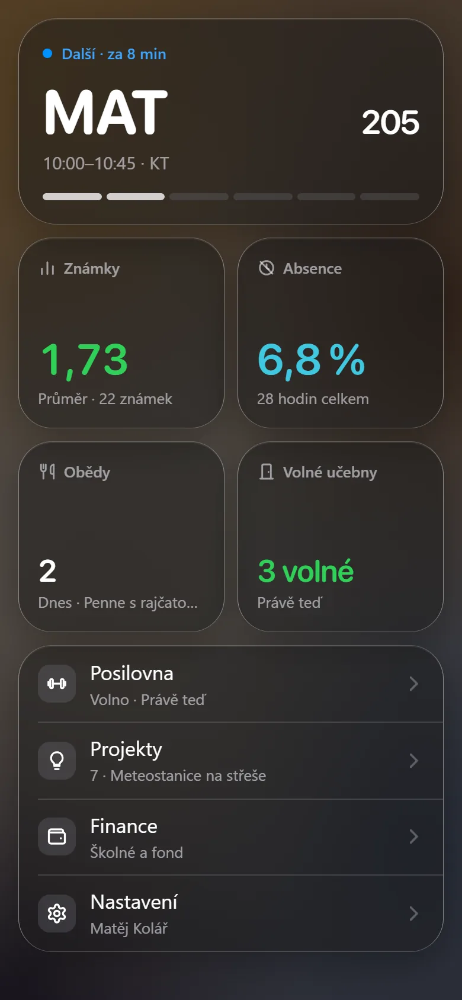
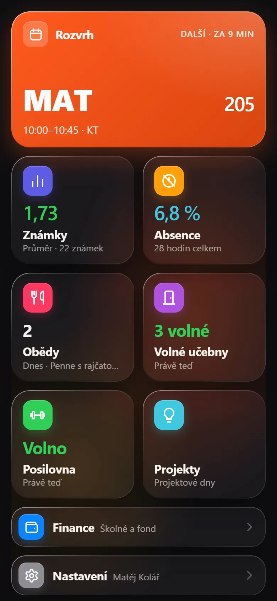

Na počítači celý týden najednou
Otevřeš appku v prohlížeči a máš rozvrh na pět dní vedle sebe, sekce v panelu vlevo a známky v kartách.

Pro studenty Kyberny. Zdarma, bez reklam.
Rozvrh se suplováním, známky, absence, obědy a volné učebny. Všechno ze školního SIS, jen rychleji a přehledně, na telefonu i na počítači.

Co umí
Bez tabulek a bez přihlašování pořád dokola. Otevřeš appku a vidíš, co potřebuješ právě teď.
Nahoře běžící hodina s odpočtem, pod ní celý den. Suplování a přesunuté učebny jsou označené a oběd máš přímo mezi hodinami.

Procenta po předmětech s čárou na hranici. Appka spočítá, kolik hodin ještě můžeš vynechat, a v kalkulačce ukáže, které konkrétně.

Propoj účet ze Stravy a jídelníček s objednávkami máš v appce. Co máš objednané, vidíš i v rozvrhu.

Appka vezme všechny učebny z rozvrhu celé školy a odečte ty, kde se zrovna učí. U každé volné řekne, do kdy volná zůstane.
Nemusíš chodit zkoušet. Appka ze školního rozvrhu pozná, kdy v posilovně zrovna probíhá hodina.

Nový vzhled ze skla, nebo ten původní. Světlý, tmavý, nebo podle telefonu. Deset ikon na výběr a plocha seřazená tak, jak ji používáš.

Otevřeš appku v prohlížeči a máš rozvrh na pět dní vedle sebe, sekce v panelu vlevo a známky v kartách.

Vybereš si známku, kterou chceš na vysvědčení, a appka spočítá, kolik na ni potřebuješ.
Nová známka, absence nebo rozvrh přepsaný ve tři ráno. Přijde notifikace, appku nemusíš mít otevřenou.

Poslední data se ukážou hned po otevření a v pozadí se obnoví. Rozvrh vidíš, i když ve sklepě nechytáš.
Projektové volby s obsazeností rolí a tvůj schválený projekt. Školné a fond s tím, co je zaplacené.
Vzhled
Appka teď má nový vzhled ze skla a světla, ve světlé i tmavé verzi. Komu víc sedí ten původní, přepne si ho v Nastavení jedním klepnutím.


Instalace
OpenSISAKHK je webová aplikace. Otevřeš ji v prohlížeči a přidáš si ji na plochu, pak se spouští z ikony přes celou obrazovku a umí posílat notifikace. Nezabírá skoro žádné místo a aktualizuje se sama.
Chceš ji radši z obchodu?
Nativní appka pro Android a iPhoneWebová verze umí všechno a zůstane zdarma. Do Google Play a App Storu se ale appka dostane jen přes placený vývojářský účet. Když se vybere dost na Ko-fi, vydám ji i nativně.
Na iPhonu to musí být Safari. Klepni na Otevřít aplikaci.
Ikona čtverečku se šipkou nahoru, dole na liště (na iPadu nahoře).
Sjeď v nabídce níž a vyber „Přidat na plochu“, pak „Přidat“.
Notifikace na iPhonu fungují jen takhle z plochy (od iOS 16.4). Zapneš je v Nastavení appky.
Klepni na Otevřít aplikaci. Často se rovnou nabídne „Instalovat aplikaci“.
Tři tečky vpravo nahoře.
Nebo „Přidat na plochu“, podle verze Chromu. Potvrď „Instalovat“.
Appka je na ploše i v seznamu aplikací. Notifikace zapneš v Nastavení appky.
Kdo ji používá
Kolik studentů appku má a jak se rozkládají po třídách.
Jen souhrnné počty po třídách. Žádná jména ani fotky.
Časté otázky
Studentská appka ke školnímu systému Kyberny (SIS, KybernaIS na sis.ssakhk.cz). Ukazuje rozvrh se suplováním, známky, absenci, obědy, volné učebny, posilovnu a projekty rychleji a přehledněji než web SIS a upozorní tě na změny v rozvrhu.
Ne. Oficiální informační systém Kyberny (SŠ a VOŠ aplikované kybernetiky Hradec Králové) je KybernaIS na sis.ssakhk.cz. OpenSISAKHK z něj jen čte tvoje data a zobrazuje je přehledněji. Napsal ji student Kyberny a škola ji nespravuje.
Ne. Kyberna (SŠ a VOŠ aplikované kybernetiky Hradec Králové) nemá Bakaláře, ale vlastní školní informační systém SIS (KybernaIS) na sis.ssakhk.cz. Aplikace Bakaláři s ním proto nefunguje. Jako mobilní appku k SIS Kyberny můžeš použít OpenSISAKHK, neoficiálního studentského klienta: přihlásíš se stejnými údaji jako do SIS a rozvrh, suplování, známky i absenci máš v telefonu přehledněji než na webu.
Oficiální mobilní aplikaci SIS Kyberny nemá, web sis.ssakhk.cz je dělaný hlavně na počítač. OpenSISAKHK je neoficiální studentský klient k SIS Kyberny pro iPhone i Android: rozvrh se suplováním, známky, absence, obědy, volné učebny a posilovna, s notifikacemi o změnách rozvrhu a nových známkách.
Stejným jménem a heslem jako do SIS Kyberny. Uživatelské jméno je část školního e-mailu před zavináčem. Heslo zůstává zašifrované v tvém zařízení a posílá se jen do SIS kvůli přihlášení.
Rozvrh celé školy je v KybernaIS na sis.ssakhk.cz/TimeTable/School jako obrázek pro každý den. Svůj osobní rozvrh se suplováním máš v SIS po přihlášení. Pohodlnější je OpenSISAKHK: ukáže tvůj rozvrh Kyberny na dnešek i další týdny, suplování a odpadlé hodiny označí, nahoře běží aktuální hodina s odpočtem a o změnách rozvrhu ti pošle notifikaci. Na počítači vidíš celý týden najednou.
Suplování máš přímo ve svém rozvrhu. OpenSISAKHK ho bere ze SIS Kyberny, takže suplované a odpadlé hodiny i přesunuté učebny jsou v rozvrhu označené. Když škola rozvrh přepíše, třeba večer nebo ve tři ráno, appka ti pošle notifikaci, co přesně se u tebe změnilo, třeba „Út 13. 10.: 8:00 MAT · 105, 8:55 odpadá“.
Otevři v appce Volné učebny a vyber den a hodinu. Appka vezme všechny učebny z veřejného rozvrhu školy, odečte ty, kde se v tu hodinu učí, a u každé volné ukáže, do kdy volná zůstane. Když běží volitelné bloky, upozorní, že některá z nich může být obsazená.
Propoj v Nastavení svůj účet ve Strava.cz, přes který školní jídelna funguje. Oběd pak vidíš přímo v rozvrhu mezi hodinami i s číslem a jídlem, které máš objednané. V sekci Obědy je jídelníček na další dny a oběd si tam objednáš nebo změníš i s tím, do kdy to jde.
Otevři v appce Posilovnu. Hned nahoře uvidíš, jestli je posilovna teď volná a do kdy, pod tím celý den po hodinách: kdy je volno a která třída tam má hodinu. Bere se to z veřejného rozvrhu školy, takže nemusíš chodit zkoušet.
Rozvrh se suplováním a odpočtem do konce hodiny, odkazy na Meet u online hodin. Známky po předmětech s vahou, typem a komentářem, průměr a výpočet, co potřebuješ z příští písemky na známku, kterou chceš. Absence po předmětech s hlídáním hranice 30 %, kolik hodin si můžeš dovolit vynechat, a plánovač, které konkrétní hodiny vynechat jde. Obědy ze Strava.cz v rozvrhu, jídelníček a objednávání. Volné učebny v kterékoli hodině a volná posilovna podle rozvrhu školy. Projekty s rolemi a tvůj schválený projekt. Školné a fond. Notifikace o změně rozvrhu, nové známce a nové absenci. Nový i původní vzhled, světlý i tmavý režim, deset ikon, verze pro počítač s celým týdnem a poslední data i bez signálu.
Web SIS Kyberny data ukazuje, OpenSISAKHK s nimi i počítá a hlídá je. Navíc proti němu umí: notifikace o změně rozvrhu, nové známce a absenci, výpočet známky, kterou potřebuješ z příští písemky, hlídání 30% hranice absence, plánovač absence po hodinách, obědy ze Stravy přímo v rozvrhu i s objednáváním, volné učebny, volnou posilovnu a běžící hodinu s odpočtem.
Ano. Je to webová aplikace (PWA): na telefonu ji otevřeš v Safari nebo Chromu a přidáš si ji na plochu, na počítači stačí prohlížeč. Nic se nestahuje z App Storu ani z Google Play.
Nic. OpenSISAKHK je zdarma, bez reklam a její zdrojový kód je veřejně na GitHubu. Kdo chce, může přispět na Ko-fi, příspěvky jdou na vývojářské účty pro Google Play (25 $ jednorázově) a App Store (99 $ ročně).
Přihlásíš se stejně jako do SIS. Na telefonu si ji přidáš na plochu jako appku.
Otevřít aplikaci